Next: The public-key coprocessor based
Up: Description of the Advanced
Previous: The transformation MixColumn
The multiplications in
 necessary to compute the
transformation
MixColumn are of great importance to our implementation.
Therefore we are going to describe them in more detail. First we need
to say a few words about the representation of the field
. In AES
the field
is represented as
necessary to compute the
transformation
MixColumn are of great importance to our implementation.
Therefore we are going to describe them in more detail. First we need
to say a few words about the representation of the field
. In AES
the field
is represented as
That is, elements of
are polynomials over
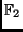 of degree
at most 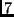. The addition and multiplication of two polynomials is
done modulo the polynomial
 . Since this is an
irreducible polynomial over
, (2) defines a field.
In this representation of
the byte
. Since this is an
irreducible polynomial over
, (2) defines a field.
In this representation of
the byte
 corresponds to the
polynomial
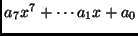.
The multiplication of an element
in
by
corresponds to the
polynomial
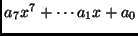.
The multiplication of an element
in
by  , and
, and  is realized by multiplying the
polynomial
with the polynomials 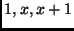, respectively, and
reducing the result modulo
. Hence
is realized by multiplying the
polynomial
with the polynomials 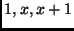, respectively, and
reducing the result modulo
. Hence
| 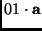 |
 |
|
|
| 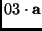 |
|
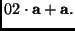 |
|
We see that the only non-trivial multiplication needed to multiply a
column of a state by the matrix in (1) is the
multiplication by 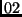. Following the notation in [DR2] we denote
the multiplication of byte by by
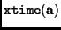. The crucial
observation is that
is simply a shift of byte , followed
in some cases by an xor of two bytes. More precisely, for
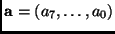
This finishes our brief description of the AES encryption procedure.
In a pure software implementation of the algorithm on an 8051 based  -controller these transformations are
performed one after the other within the CPU using 48 bytes of directly addressable internal RAM,
and taking roughly 12000 clock cycles to encrypt a 128 bit data block with a 128-bit key.
The decryption algorithm takes about 30% more time than the cipher and
requires at least the same bytes of internal RAM resources.
This is due to the fact that the software implementation of the inverse
MixColumn transformation
used for decryption is less efficient than the
MixColumn transformation used for encryption.
-controller these transformations are
performed one after the other within the CPU using 48 bytes of directly addressable internal RAM,
and taking roughly 12000 clock cycles to encrypt a 128 bit data block with a 128-bit key.
The decryption algorithm takes about 30% more time than the cipher and
requires at least the same bytes of internal RAM resources.
This is due to the fact that the software implementation of the inverse
MixColumn transformation
used for decryption is less efficient than the
MixColumn transformation used for encryption.
Next: The public-key coprocessor based
Up: Description of the Advanced
Previous: The transformation MixColumn
Roger Fischlin
2002-09-25